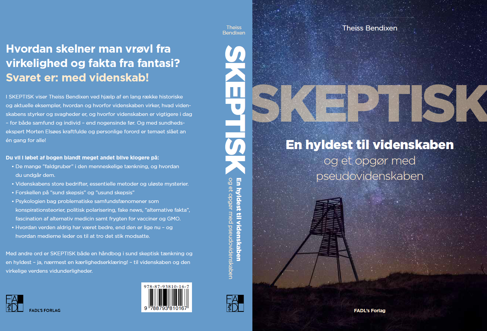
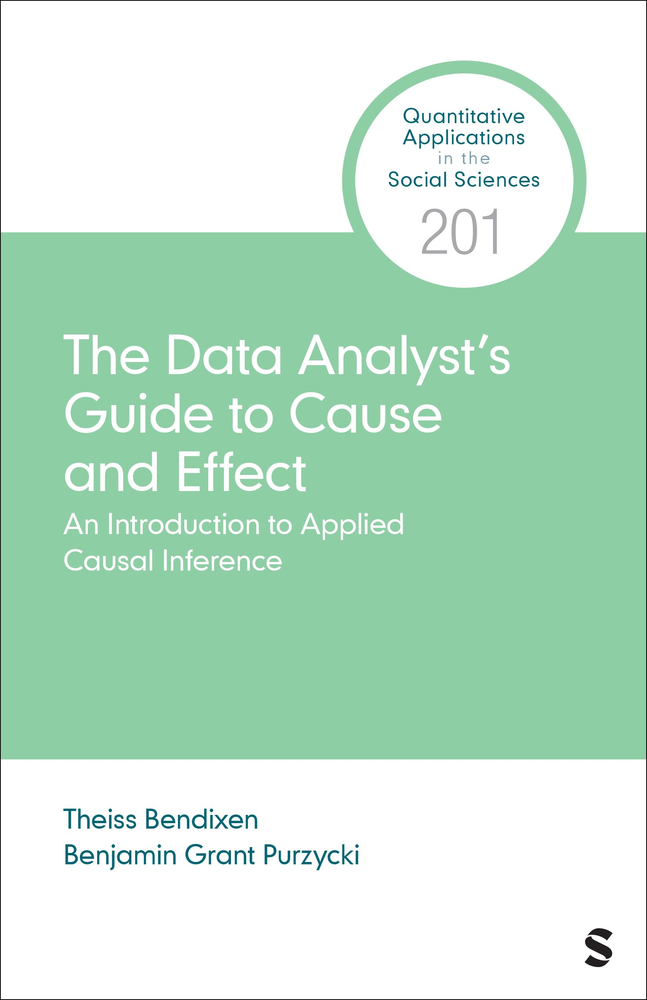

En hyldest til videnskaben...
... Og en håndbog i sund skeptisk tænkning.
Theiss Bendixen har forfattet to populærvidenskabelige bøger, mere end 40 videnskabelige artikler, en redigeret fagbog samt The Data Analyst's Guide to Cause and Effect, en introduktion til kausal data-analyse. Theiss arbejder som adfærdsforsker, konsulent og data-analytiker og markerer sig i den offentlige debat på en række emner, herunder konspirationsteorier og misinformation, sundhed og alternativ behandling samt videnskab, videnskabelig tænkning og effektiv velgørenhed. Kontakt for samarbejde, pressehenvendelser, foredrag, mv.



"a clear and readable book with broad coverage of many ideas and methods in causal inference" -- Andrew Gelman, Columbia University
"an excellent, comprehensive, yet accessible introduction to causal inference" -- Julia Rohrer, University of Leipzig
"an effective tool for getting data analysts into the world of causal inference" -- Nicholas Huntington-Klein, Seattle University